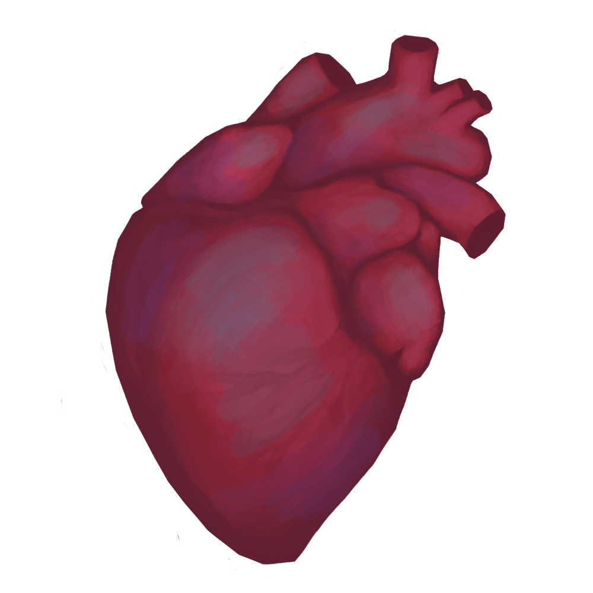

I AI,
but I
human made
Ich benutze KI als Werkzeug zur Effizienzsteigerung meiner Arbeit. Aber ich mag es, zu kreieren. Auch in meiner Freizeit male, töpfere, nähe und koche ich gerne.

Ich benutze KI als Werkzeug zur Effizienzsteigerung meiner Arbeit. Aber ich mag es, zu kreieren. Auch in meiner Freizeit male, töpfere, nähe und koche ich gerne.